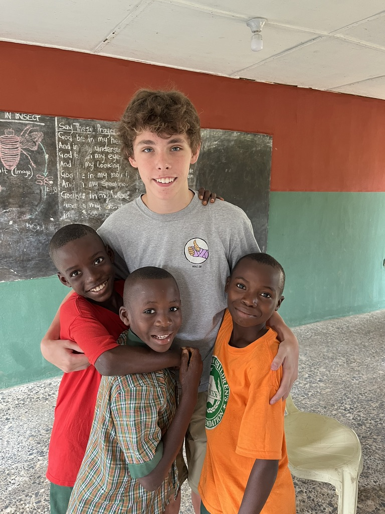

Teaching in Etinan, Nigeria

Last summer, I spent a month living and teaching in Etinan, a town in Akwa Ibom State in southeastern Nigeria. For four weeks, I worked with an elementary classroom on reading, writing, and English pronunciation. It was one of the most humbling experiences of my life, and it changed how I think about education, opportunity, and what I want to do with my career.
Where Is Etinan?
Etinan is a town of a little over 200,000 people in Akwa Ibom State, in the “South South” region of Nigeria, near the Gulf of Guinea. It’s known for farming and craftwork, and it turned out to be one of the most welcoming communities I’ve ever spent time in. It’s also a long way, geographically and otherwise, from the classrooms I grew up in, which is part of why this trip has stuck with me.
How I Ended Up There
I traveled to Etinan through the Etinan Children’s Scholarship Foundation, a short-term teaching placement that pairs volunteers with local schools that are short on staff and resources. I signed up because I wanted real classroom experience before committing to a career in education, and I wanted to see, firsthand, what it looks like when a school is doing everything it can with very little.
The Students and the Community
I taught a class of about 15 students, ranging in age from 5 to 13. They were sharp, funny, and endlessly curious. They wanted to learn just as much as any student I’ve ever met, but they were working with torn textbooks, no reliable electricity in the classroom, and, in some cases, a teacher stretched across far too many students. Outside of school, I got to know families in the community, ate meals I won’t forget, and saw how much people were willing to do to give their kids a shot at something better.
What’s on This Site
The next page, Inside the Classroom, walks through what teaching there actually looked like: a typical day, the lessons I ran, and a few students and moments that have stayed with me. The last page, The Bigger Picture, zooms out from Etinan to talk about educational inequality on a global scale, why it matters, and what I’m planning to do about it.